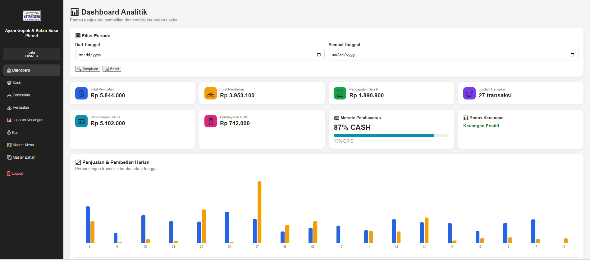

Kasir & Penjualan
Proses transaksi lebih cepat dengan pencatatan penjualan yang terstruktur.
SolusiKasirKu membantu usaha mengelola transaksi, stok, pembelian, kas, laporan, dan dashboard dalam satu sistem yang dapat disesuaikan dengan alur bisnis Anda.

Dibuat agar aktivitas operasional lebih teratur dan informasi usaha lebih mudah dipantau.
Proses transaksi lebih cepat dengan pencatatan penjualan yang terstruktur.
Pantau persediaan barang dan menu agar stok lebih mudah dikendalikan.
Catat pembelian bahan atau barang dan hubungkan dengan kebutuhan stok.
Catat pemasukan dan pengeluaran untuk membantu memantau arus kas.
Ringkasan data usaha membantu Anda melihat hasil operasional secara berkala.
Penjualan, pembelian, transaksi, metode pembayaran, dan menu terlaris dalam satu layar.
Berikut contoh tampilan sistem yang digunakan pada pengembangan SolusiKasirKu.
Klik gambar untuk memperbesar.
SolusiKasirKu tidak harus mengikuti pola bisnis yang sama. Sistem dapat dikembangkan mengikuti kebutuhan dan alur kerja usaha Anda.
Diskusikan alur usaha terlebih dahulu, kemudian sistem disesuaikan dengan proses kerja yang sebenarnya.
SolusiKasirKu dibuat untuk membantu pemilik usaha berpindah dari pencatatan manual menuju sistem digital yang lebih rapi dan mudah digunakan.
Ceritakan jenis usaha dan kebutuhan Anda. Kita bahas sistem yang paling sesuai.